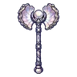
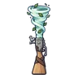

เทอโรซอร์
มอนธาตุลม Lv 72–96
เจอที่
| แมพ | โซน | Lv | ภูมิภาค |
|---|---|---|---|
| ทะเลสาบไข่มังกร | 88–94 | ที่ราบสูง | |
| ทะเลสาบไข่มังกร | ฝั่งรังมังกร | 94–96 | ที่ราบสูง |
| หุบเฟิร์นยักษ์ | 72–84 | ที่ราบสูง | |
| หาดซากแอมโมไนต์ | 88–94 | ที่ราบสูง | |
| หาดซากแอมโมไนต์ | เปลือกหอยยักษ์ | 94–96 | ที่ราบสูง |
| ผารังเทอโรซอร์ | 88–94 | ที่ราบสูง | |
| ผารังเทอโรซอร์ | เสาหินรังยักษ์ | 94–96 | ที่ราบสูง |
| ป่ายางอำพัน | 88–94 | ที่ราบสูง | |
| ป่ายางอำพัน | ต้นอำพันยักษ์ | 94–96 | ที่ราบสูง |
ค่าสถานะตามเลเวล
| Lv | HP | ATK | DEF | MDEF | EXP | Job |
|---|---|---|---|---|---|---|
| 72 | 24,332 | 145–217 | 17 | 15 | 86 | 65 |
| 84 | 38,272 | 175–263 | 20 | 18 | 99 | 74 |
| 96 | 55,787 | 214–321 | 23 | 20 | 112 | 84 |
ตีด้วยธาตุไหนดี
แรงขึ้น: ดิน ×1.5 พิษ ×1.25
เบาลง: น้ำ ×0.5 ลม ×0.25
วัตถุดิบที่ดรอป
| ของ | โอกาส | |
|---|---|---|
| หงอนเทอโรซอร์ | 55% | 1 ชิ้น (15% ได้ 2) |
อุปกรณ์ที่ดรอป (9)
| ของ | โอกาส |
|---|---|
| 0.25% | |
| เกราะมังกรไพร (เกราะอก) | 0.15% |
| เกราะมังกรไพร (สนับขา + รองเท้าเกราะ) | 0.15% |
| 0.12% | |
 ขวานยักษ์มุกหอยนางรม | 0.06% |
| 0.06% | |
| 0.06% | |
 ลูกซองพายุหมุน | 0.06% |
| เกราะมังกรไพร (แหวนตามังกร) | 0.05% |
สกิล
ยิงกระจาย (Lv 25+) · ยิงกระจาย (Lv 60+) · หลบ (Lv 60+)